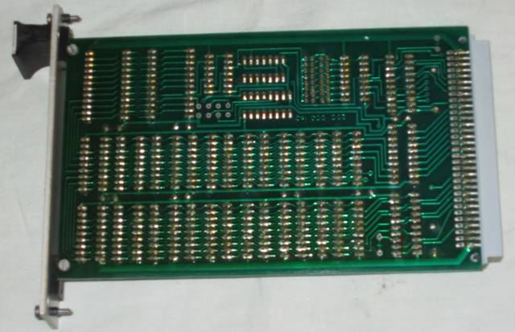

Hardware
History of a motherboard
The Motherboard is the main Circuit Board found in microcomputers and other systems. It allows communication between many of the electronic components of a system. A motherboard usually contains significant sub-systems such as the central processor, input/output
and memory controllers, interface connectors and other components integrated for general use. The motherboard is often referred to as the mother of all components as the name suggests. The CPU, memory and peripherals were housed on individual
circuit boards which were plugged into the backplate.Laptop and notebook computers that were developed in the 1990s integrated the most common peripherals. This included motherboards with no upgradeable components, a trend that would continue
as smaller systems that were introduced after the turn of the century. Modern motherboards include Sockets, a chipset, Non voltaile memory chips, A clock generator, Slots for expansion cards and Power Connectors. The sockets are where mictoprocessors
are installed. The CPU is directly soldered to the motherboard. A chipset forms an interface between the CPU's front side bus, main memory and peripheral base. The Non Voltaire Memory Chips contain the systems firmware or BIOS. A clock generator
produces the system clock signal to synchronize the various components. The Slots for expansion cards are the interface to the system via the buses supported by the chipset.

Types of RAM
Two Widely used forms of modern RAMS are Static RAM(SRAM) and Dynamic RAM(DRAM). In SRAM, a bit of data is stored using the state of a six transistor memory cell. This form is more expensive, but is faster and requires less dynamic power than DRAM. DRAM
stores a bit of data using a transistor and capacitor pair, which together comprise a DRAM memory cell.


Parts of a Hard Drive
The hard drive is an incredibly efficient computer memory device that uses simple magnetism to store vast amounts of informations. In your laptop there's just a large shiny circular plate of magnetic material called a platter. In a hard drive you can
find a read-write arm, an Actuator that moves the read-write arm, a Central Spindle, a Magnetic Platter, Plug connections that link the hard drive to circuit board in personal computer, and a small spindle that allow read-write arm to swing across
platter.